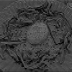
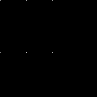

FLIF (Free Lossless Image Format) は、実用されている可逆圧縮形式としておそらく現在最強の圧縮手法です。実際、画像圧縮手法に関する最近の研究では、 FLIF が比較対象となることが多いように思われます。このブログ記事では、 FLIF がどのように圧縮を行っているのか、理解できた範囲で記録していきます。
ファイル形式としての特徴は、アルファチャンネル対応、 HDR (サブピクセルが8ビットより大きい) 対応、アニメーション対応と、現代的な画像形式として一般的な構成となっています。
圧縮手法としての特徴は、次の2点が挙げられます。
-
色空間 (YCoCg) や画素値の範囲を変換することで、画素間の相関が大きくなり、効率よく符号化できるようにします。
-
エントロピー符号化に使用する確率分布の使い分け（コンテキスト）を入力画像から決定木の形式で学習します。
FLIF は、すでに ImageMagick で実装されており、すぐに試すことができます。また、コーデックのリファレンス実装は GitHub にあります (FLIF-hub/FLIF)。
なお、現在 FLIF の開発はストップしており、 FLIF の成果は JPEG XL に取り込まれるようです。ただ JPEG XL の説明を読む限り、以上に挙げた特徴とは違っているので、手法としては別物になるのではないかと思っています。
1. 他の可逆圧縮手法との比較
（あんまり詳しくないので、ツッコミよろ）
現在 web でシェアを取っている PNG と WebP は、 Deflate のような辞書型圧縮が使用されています。 PNG や WebP の可逆圧縮モードでは、入力画像の画素値、または隣接画素を使った画素値の予測をしたときの誤差（残差）を Deflate のような手法で圧縮します。
FLIF は、このような辞書型圧縮 + ハフマン符号の構成ではなく、算術符号で符号化を行います。算術符号については後で説明します。
算術符号を使用する手法としては、 JPEG 2000 や H.264 があります。これらの手法では、2値に対する算術符号が使用されています。 FLIF もこれらの手法を参考にしつつ、算術符号化にもちいる確率分布を獲得する方法を工夫しています。
2. FLIF ファイルの構成
FLIF ファイルは、大きく次のように構成されます。区切り方は FLIF16 Specification に従っています。
- Main Header
-
画像の大きさやチャンネル数が記述されます。
- Metadata
-
任意のデータを書き込めます。ここに Exif とかを入れます。
- Second Header
-
圧縮に使用するパラメータが記述されます。ここで色空間やその他の変換をするのか、するならば変換に使用するパラメータを記述します。
- Pixel Data
-
Second Header で指定した変換がなされた画像のデータです。この記事で詳しく説明します。
3. 画素値の符号化順
画素値の符号化には2種類の方法が用意されています。
- 非インターレース (Non-interlaced)
-
左上の画素から順番に符号化していきます。デフォルトでは、総画素数が1万未満のときに使用されます。
- インターレース (Interlaced)
-
画像を 1/2, 1/4, 1/8, …… と縮小していき、小さい画像から順に符号化していきます。画素値を予測するときに、小さい画像の画素値を使って予測を行うことができるので、非インターレースではできないような予測（予測しようとしている画素の右下の画素を使う）ができます。
3.1. 非インターレース方式
非インターレース方式では、 Pixel Data パートは次のような構造になります。
-
MANIAC 符号化 (Section 4.4) に使用する決定木
-
チャンネルごとに、画素値を左上からラスタスキャンの順に MANIAC 符号化したデータ
実際に符号化する画素値は、予測された画素値との誤差になります。予測に使用する画素は、 Figure 1 に示すように、予測する画素 X の左上、上、左です。
予測値は、 L+T-TL, L, T の中央値です。 X-予測値 が実際に符号化される値になります。
アルファチャンネルがある場合、アルファチャンネルが一番最初に符号化されます。なぜなら、 Second Header の項目に、透明ピクセルのデータを捨てる（Aが0ならRGBの値は未定義にする）オプションがあるため、ある座標が透明ピクセルかどうかがわからないと他のチャンネルを符号化・復号化できないからです。アルファチャンネル以外については、 YCoCg はその順番で、 RGB は Second Header の変換で PermutePlanes が指定されているかどうかで決まります。
3.2. インターレース方式
大きいサイズの画像に対しては、非インターレース方式よりも複雑ですが、予測精度の高い手法を用いることで、圧縮効率を稼ぎます。インターレース方式では小さい画像から段々と大きい画像を復元していきます。 PNG だとインターレースを使用するメリットは読み込み途中でも画像を表示できるという程度ですが、 FLIF では圧縮率に貢献します。
次の表は実際の復号化中のデータを Y チャンネル（輝度値）について取り出したものです。この場合では、ズームレベル 14 から順番に復元していきます。
| ズームレベル | サイズ | 画像 |
|---|---|---|
0 |
120×120 (原画像サイズ) |
|
1 |
120×60 |
 |
2 |
60×60 |
|
3 |
60×30 |
|
4 |
30×30 |
|
5 |
30×15 |
|
6 |
15×15 |
|
7 |
15×8 |
|
8 |
8×8 |
|
9 |
8×4 |
|
10 |
4×4 |
|
11 |
4×2 |
 |
12 |
2×2 |
|
13 |
2×1 |
|
14 |
1×1 |
|


具体的なアルゴリズムを書くと長くなるので、以上のように画素が埋まっていくんだなと解釈してください（雑）。最後のズームレベルは 1×1 になるので、より大きな画像ではズームレベルがさらに多くなります。また、横長、縦長の画像では、あるズームレベルで 1 ピクセルも復元されないことがあります。
このように圧縮すると何がうれしいかというと、すでに復号化されている隣接画素の情報を画素値予測に使うことができることができます。図からも 4×4 くらいになれば、手がかりになりそうなデータになっていることが分かると思います。実際、インターレース方式で使用する予測器は、非インターレース方式の予測器よりもリッチです。
予測器はズームレベルが偶数か奇数かで少し挙動が変わります。なぜなら周囲の画素の復号化状況が異なるからです。偶数では行を復号化するため、下側の画素を参照することができますが、右側を参照することはできません。奇数では列を復号化するため、逆に右側を参照することできますが、下側を参照することができません。
実際の予測器を見てみましょう。予測する画素 X の周辺画素に次のように名前を付けておきます。
次に示す図は、画素 X を復号化するときの、周辺画素の復号化状況です。背景がグレーになっている画素は前のズームレベルまでに復号化された画素、背景が白の画素は今のズームレベルで復号化する画素です。「?」となっている部分はまだ復号化されていません。この通り、ズームレベル偶数では R を参照することはできず、奇数では B を参照することができません。
また、画像の端っこの画素を処理するときには、参照できない周辺画素があります。その場合は、偶数ズームレベルでは必ず T があり、奇数ズームレベルでは L があるので、その値を代用します。
予測器は次の3つから選ぶことができます。チャンネルごとに指定するかズームレベルごとに指定するかが選べます。リファレンス実装のデフォルトでは、チャンネルごとにズームレベル 0 と 1 で試しにすべての予測器で予測させて、誤差が一番少ないものを選択します。
| 予測器 | ズームレベル偶数 | ズームレベル奇数 |
|---|---|---|
0 |
(T + B) >> 1 |
(L + R) >> 1 |
1 |
次の中央値
|
次の中央値
|
2 |
次の中央値
|
次の中央値
|
「>> 1」は 2 で割って切り捨てなので、平均を求めていることになります。予測器 0 では両隣の平均、予測器 1 では斜め方向も含めて計算してみて中央値を取る、予測器 3 では周囲の中央値を取るという戦略になっています。予測器で使われない TT や LL といった画素は、 Section 4.4 で説明する決定木の条件として参照されます。
4. 符号化
それでは、予測値の誤差をどのようにビット表現に変換しているのかについて説明していきましょう。 FLIF ではこの符号化手法のことを MANIAC (Meta-Adaptive Near-zero Integer Arithmetic Coding) と呼んでいます。ここでは、算術符号 (Arithmetic Coding)、適応的算術符号 (Adaptive Arithmtic Coding)、 Near-zero Integer Coding、 Meta-Adaptive に分割して説明していきたいと思います。
4.1. 算術符号
4.1.1. 実数による算術符号
算術符号は、記号の出現確率分布（累積分布）を表す数直線上で、符号化したい記号列がどの位置にあるのか、を記録する符号化方式です。
まずは簡単な概念の説明のために、0～1の実数で考えてみます。 FLIF で使用される算術符号では「0」と「1」の2種類の記号だけが登場する（二値算術符号）記号列を扱うので、ここでも2種類の記号で考えます。例えば、「0」が 40% 、「1」が 60% の確率で出現することがわかっているとします。この確率によって、 0～1 の数直線を分割すると、このようになります。数直線上に点を置いたとき 0～0.4 の範囲にあるならば 0、 0.4～1 ならば 1 を表している、と解釈できます。
では、この分割を再帰的に用いて、記号列「101」を数直線上に表してみましょう。
最初の記号は 1 なので、 0.4～1 の範囲に注目します。この範囲をさらに 40:60 に分割するとこのようになります。
2個目の記号は 0 なので、次は 0.4～0.64 の範囲に注目し、同じように分割します。
この結果から、記号列「101」をこの数直線上に表すと 0.496～0.64 の範囲となることがわかりました！ 符号化結果としては、範囲の左端を使って「0.496」とすることにしましょう。このように、記号列を記号の出現確率を使って数直線上に表す方法が、算術符号になります。復号化するときは、「0.496」がどの記号の範囲に含まれているかを、同じように分割しながら探索していきます。
4.1.2. Range Coder
先ほどの例では実数を使って表しましたが、記号列が長くなると相当な精度の小数を使用しなければ正しく符号化結果を記録できないことがわかると思います。また小数を使用すると計算速度も遅くなります。そこで、現実的な実装方法として、整数を使用する Range Coder という手法が用いられます。 FLIF のリファレンス実装のソースコードでは「RAC」と略されています。
Range Coder では、正しく符号化結果を記録できるだけの長さ（整数）を持つ数直線上に、記号列をプロットします。とはいえ、その「十分な長さ」がどれだけ長くなるかわからないので、最初の数直線の長さを決めておき、注目範囲が閾値より小さくなったら、数直線の長さを拡張します。 FLIF では、最初の数直線の長さを 24 ビット、閾値を 16 ビットとしています。数直線の長さを拡張する際、そのとき注目している範囲の左端の上位ビット（ここでは差が 8 ビットなので 8 ビット分）を出力します。なぜなら、左端はこれ以上符号化を進めても、現在の右端を超えることはないため、上位ビットの値はほぼ決まっているからです（場合によっては桁上がりが発生して、上位ビットが変わることがあるため、少し工夫が必要です）。
詳細なアルゴリズムについては、私よりもうまい説明に任せたいと思います。
-
圧縮アルゴリズム (10) 算術符号化 (Fussy’s HOMEPAGE)
4.1.3. コンテキスト
二値のエントロピー符号化全般として、圧縮率を良くするためには、出現確率が 0 と 1 のどちらかに極端に偏っているほうがうれしいです。
例えば、4ビットの整数を3個並べたビット列を、算術符号化することを考えてみます。 10, 11, 12 をそのままビット列にすると「1010 1011 1100」となり、 0 の出現確率は 0.417、 1 の出現確率は 0.583 となります。この確率分布で算術符号化しようとすると、出現確率が 0.5 に近く、圧縮する意味がほとんどないことがわかると思います。
しかし、見方を変えると偏った分布に見えます。4ビット整数の最上位ビットだけをみると全部 1 です。さすがに 100% の確率で 1 が出現する、としてしまうと、もし 0 が出てしまったときに符号化不可能になってしまいますが、 1 の出現確率を大きくすることで、これらのビットを効率よく圧縮できます。つまり言いたいことは、ビット列をただそのままビット列として見るのではなく、ビットの持つ意味や符号化の状況（この例では整数の何ビット目か）ごとに確率分布を変えることで、圧縮率を改善できるということです。意味ごとの確率分布をコンテキストと呼びます。
ただし FLIF ではコンテキストのコンテキストを考える必要があり、言葉が混乱するので、この後で「確率表 (chance table)」と「コンテキスト」に分割して再定義します。
4.2. 適応的算術符号
先ほどの例では 0 と 1 の出現確率が分かっているという前提がありました。つまり符号化・復号化を行うには、事前に出現確率を仮定しておくか、出力に出現確率を記録するかをしなければいけません。しかし、雑に出現確率を仮定して符号化をすると、もし実際の記号列が仮定した出現確率と異なる分布だった場合、圧縮率は悪化してしまいます。そこで、出現確率を記録しておく必要はなく、雑な出現確率の仮定で、それなりに圧縮率を改善する方法として、符号化を行いながら確率を変化させる手法があります。実際の記号列に適応していくことから、適応的 (adaptive) と呼ばれます。コンテキストを使用する場合は、コンテキストごとに別々に適応させていくことができます。
FLIF で使用されている適応方法は非常に簡単なものです。初期の出現確率は仕様で指定されています。1ビットを符号化する（数直線を変化させる）たびに、出現確率を変化させます。変化量は、ビットが 0 ならば、 0 の出現確率を少し増やす（= 1 の出現確率を少し減らす）、 1 ならば 1 の出現確率を少し増やすというものです。
4.3. Near-zero Integer Coding
FLIF では、各画素について、予測値からの誤差（整数）を記録します。予測が当たれば誤差は 0 に、当たらなくても大抵は近い値になるので誤差は 0 前後になるはずです。そこで、 0 に近いほどビット数が少なく済むような方法で、誤差を記録します。
ビット列は、次のような構成になっています。
-
ゼロフラグ
-
正負符号
-
指数
-
仮数
もし値がゼロなら、ゼロフラグを 1 としておしまいです。そうでなければ、正(1)か負(0)か、何ビットあるか、数値のビット列、の順で記録します。
例えば、「5」を符号化すると次のようになります。
ビット |
0 |
1 |
0 |
0 |
1 |
0 |
1 |
|---|---|---|---|---|---|---|---|
ビット名 |
ZERO |
SIGN |
EXP(0, +) |
EXP(1, +) |
EXP(2, +) |
MANT(1) |
MANT(0) |
指数部は数値が何ビットあるかを表します。数値が何ビットあるかは 0 が連続した数で決まります。この例では、 0 が 2 個続き、その次が 1 なので、 3 ビットの数値を表していることを表現しています。
仮数部は、最上位ビット以外の値がそのまま出力されます。最上位ビットについては、何ビットあるかが指数部で示されているので、 1 であることが確定しています。
ただし、数値の取りうる範囲によっては、一部ビットが省略されることがあります。ここでは最小値を任意の負値、最大値を 5 として、 5 を符号化した例を見てみましょう。
ビット |
0 |
1 |
0 |
0 |
1 |
|---|---|---|---|---|---|
ビット名 |
ZERO |
SIGN |
EXP(0, +) |
EXP(1, +) |
MANT(0) |
まず、指数部の最後のビットが省略されました。なぜなら、最大値 5 は 3 ビットで表されるので 0 が 2 個続いた時点で、 3 ビットであることが確定するからです。次に仮数部の下位2ビット目が省略されました。なぜなら、 3 ビットで表す必要がある数値は 4 または 5 だけなので、下位 2 ビット目は必ず 0 になることが確定しているからです。このように実際に書き込まなくてもわかる場合は、ビットを省略する動作をします。
Table 3、Table 4 には、ビット名という行を用意しました。これは Section 4.1.3 で説明したコンテキストが実際どのように使用されているのかを表しています。ビット名単位で適応が行われます。つまり予測器の出力が 0 になることが多ければ ZERO が 1 になる確率が適応によって段々と大きくなるし、正になることが多ければ SIGN が 1 になる確率が適応によって段々と大きくなるということです。
ビット名は ZERO, SIGN, EXP(0～9, +), EXP(0～9, -), MANT(0～9) があります。 EXP は値が正か負かによって分かれます。これらそれぞれのビットの確率をまとめたものを、 FLIF では chance table と呼んでいます。ここでは便宜上日本語で「確率表」と呼ぶことにします。 Near-zero Integer は確率表を用いて適応的算術符号化を行うことができるということになります。ビット名に対応する初期確率は、仕様で定められています。
4.4. Meta-Adaptive
4.4.1. ざっくりとした説明
ここまでで、各画素値を周囲の画素値を使って予測し、その予測誤差を確率表を使って適応的算術符号化して記録するということがわかりました。しかしまだ終わりではありません。 FLIF では確率表を状況に応じて使い分けます。つまり確率表のコンテキストを考えます。これが FLIF 用語での「コンテキスト」になります。
コンテキストについてざっくりいうと、符号化しようとしている画素に関する情報を条件とする決定木によって、使用する確率表が決定します（Figure 5）。条件には他のチャンネルの画素値や、周辺画素同士の差といった情報が使えます。条件に使用できる情報をそれぞれプロパティと呼び、非インターレース方式で10種類、インターレース方式で17種類のプロパティがあります。プロパティ値がある値より大きい場合と、ある値以下の場合で分岐します。
4.4.2. カウンター
さらに踏み込んで見てみます。もし最初から Figure 5 のように使用する確率表が決まるとすると、それぞれの確率表の初期値はどのように決まるのでしょうか？ 確率表それぞれが別々に適応を行っていくので、すべての確率表を仕様で定められた確率で初期化したら、適応によって確率表が温まるまでの間に全画素についての処理が終わってしまいます。そこで FLIF の決定木にはカウンターという機能が盛り込まれています。
カウンターの説明のため、根と2つの葉だけの決定木を考えてみます。葉以外のノードは、条件とカウンターを持っています。この決定木を使って、画像を復号化することを例にカウンターの挙動を説明します。
この決定木を使って、画素をひとつ復号化してみましょう。まず決定木の根に注目します。するとカウンターの値は2です。注目したノードのカウンターが 0 より大きいとき、そのノードが持つ確率表を使って画素を復号化します。このとき、読み取ったビット列によって適応が行い、確率表1を更新します。そして、ノードのカウンターをデクリメントします。
次の画素の復号化も同じように行います。すると根のカウンターが 0 になりました。もしノードのカウンターが 0 になったならば、そのノードの子ノードに確率表をコピーします。
いま、確率表2と確率表3は、確率表1と同じ内容になっています。
次の画素を復号化します。まず決定木の根に注目します。するとカウンターの値は 0 です。注目したノードのカウンターが 0 のとき、そのノードの条件を評価します。ここではプロパティAの値はX以下だったとします。決定木にしたがって分岐を行い、左側の子ノードに注目します。このノードは葉ノードなので、この確率表を使って復号化します。このとき適応によって確率表2が更新されます。
このように、カウンターが 0 になって初めて条件分岐が有効になります。つまり、確率表ひとつからスタートし、ある程度適応したら条件によって確率表を分岐させる、という作戦です。このことによって分岐したどの確率表も適応が進んだ状態になっており、効率的な符号化が行えます。この例では根の子が葉でしたが、実際にはもっと複雑な決定木が生成されます。
4.4.3. 符号化時の学習
では、このような決定木をどのように獲得するのでしょうか。 FLIF エンコーダはまず決定木の学習のために何回か画像の符号化を試し、その後完成した決定木を使って最終的な符号化を行います。学習のためのお試し符号化は、デフォルトで2回行われます。
決定木の初期状態は1ノードのみ（根かつ葉）で、符号化中に段々と成長していきます。それでは、どのように決定木が成長するのか見てみましょう。
葉ノードは次の情報を持っており、これらは1画素を符号化するたびに更新されます。
-
確率表
-
何回このノードを使ったか
count -
このノードを使った符号化で出力した情報量
realSize -
プロパティそれぞれについて
-
符号化するたびにプロパティ値を足していったもの
virtPropSum（countで割れば平均になる） -
このプロパティの平均値を条件として分岐していたと仮定したときの確率表
virtChances（平均値より大きい場合と、以下の場合のふたつ） -
このプロパティの平均値を条件として分岐していたと仮定したときの情報量の予測値
virtSize
-
これらの更新処理を踏まえて、学習における1画素の符号化手順を次に示します。
-
根から決定木にしたがって葉ノードを探す。
-
countをインクリメントする。 -
すべてのプロパティ値を取得し、
virtPropSumを更新する。 -
Near-zero Integer のそれぞれのビットを符号化する。
-
ノードの確率表を使って符号化し、その情報量を
realSizeに加算する。情報量とは算術符号化に使用した確率から求めた、確率が小さいほど大きくなる値のこと。 -
各プロパティについて、
virtChancesを使って符号化する。virtChancesのふたつある確率表のうち、どちらの確率表を使うかは、現在のプロパティ値がvirtPropSum / countより大きいか、それ以下かで決まる。このときの情報量をvirtSizeに加算する。
-
そして、もしもっとも virtSize が小さいプロパティについて realSize - virtSize が閾値より大きくなったなら、そのプロパティを条件として分岐します。このときの count が Section 4.4.2 で説明したカウンターになります（実際には決定木自体を符号化するときに効率が良くなるよう、実際の count 値よりも少し簡単化します）。
このような操作を繰り返して、決定木が成長していきます。適応的符号化のコンテキストを決定木の形式でさらに適応させることから Meta-Adaptive というわけです。
4.4.4. 決定木の符号化
学習した決定木も FLIF ファイルに記録されます。決定木の各ノードについて、条件とするプロパティ番号、カウンター、条件とするプロパティ値が、行きがけ順で記録されます。各ノードについて3つの整数値を記録するので、3つの確率表が用意され、確率表を使って適応的算術符号化されます（Near-zero ではないものもありますが、 Near-zero Integer Coding を利用します）。
4.5. インターレース方式の符号化
非インターレース方式では、すべての画素がこの決定木によって符号化・復号化されます。一方でインターレース方式では、最初から決定木を使うわけではなく、ズームレベルの小さい（数字の大きい）ほうから 12 個については確率表の慣らし運転をします。
インターレース方式では、次の順番で符号化されます。
-
各チャンネルの左上1ピクセルを、定数の確率表を使って符号化
-
根ノードのみを持つ決定木を作成
-
最初の 12 ズームレベルを符号化
-
残りのズームレベルで決定木の学習を行う
-
決定木を符号化
-
残りのズームレベルを符号化
復号化は、これに合わせて次の順番で行われます。
-
各チャンネルの左上1ピクセルを、定数の確率表を使って復号化
-
根ノードのみを持つ決定木を作成
-
最初の 12 ズームレベルを復号化
-
決定木を復号化
-
残りのズームレベルを復号化
5. まとめ
FLIF は画像を次のように圧縮符号化しています。
-
色空間やパレットの変換（説明できるほど読み込んでいないので、この記事では紹介できませんでした）
-
画素値を周辺画素から予測し、予測誤差を求める
-
MANIAC という手法で予測誤差を符号化
-
画像を試しに符号化してみて、予測誤差の傾向を決定木の形式で学習
-
決定木も出力ファイルに記録
-
この記事が、画像の可逆圧縮アルゴリズムを調べている方の助けになればと思います。